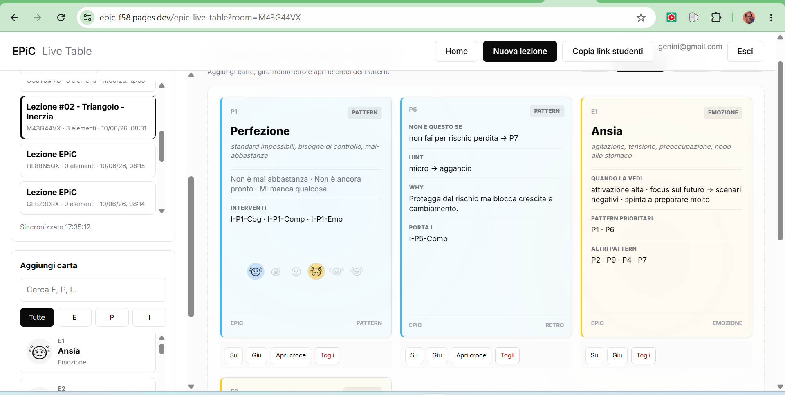

01
Hai ascoltato
Hai raccolto segnali, parole, contesto.
 COACH · TRAINER · MENTORE
COACH · TRAINER · MENTORE
BUSSOLA DECISIONALE
La bussola decisionale per chi supporta gli altri nelle scelte.
EPiC svela la dinamica che alimenta la situazione e permette all'intervento giusto di emergere spontaneamente.
Scopri EPiC02 / ORIENTARSI
A volte il problema non è capire la situazione.
È capire dove entrare.
Hai raccolto segnali, parole, contesto.
Ma la lettura resta ancora troppo ampia.
E qui l’intervento può muovere. O peggiorare.
03 / STESSO SINTOMO


Stesso sintomo.
Interventi opposti.
04 / SVELARE LA DINAMICA
ora sai perché si chiama EPiC
EPiC aiuta a leggere ciò che alimenta la situazione.
Da lì, l'intervento più utile diventa evidente.
05 / EPiC IN AZIONE
EnergiaAnsia
PatternImpostura
InterventoRiconosci le evidenze.
ComportamentoSi candida.
EnergiaStress
PatternConfini
InterventoFormula una richiesta esplicita.
ComportamentoRimanda una consegna.
EnergiaPaura
PatternPerfezione
InterventoDefinisci “abbastanza buono”.
ComportamentoPubblica.
06 / STRUMENTI

Per facilitare conversazioni e decisioni dal vivo.

Per insegnare, condividere e lavorare in gruppo.

Per allenare la lettura delle situazioni e orientarsi nel modello.

Per consultare Energie, Pattern e Interventi in un'unica vista.
07 / ORIGINE
EPiC nasce da anni di lavoro con persone, coach, team e professionisti chiamati ogni giorno a supportare decisioni complesse.
La domanda era sempre la stessa:
dove intervenire per generare movimento reale?
EPiC è stato progettato per supportare chi supporta gli altri nelle scelte.
Esplora EPiC